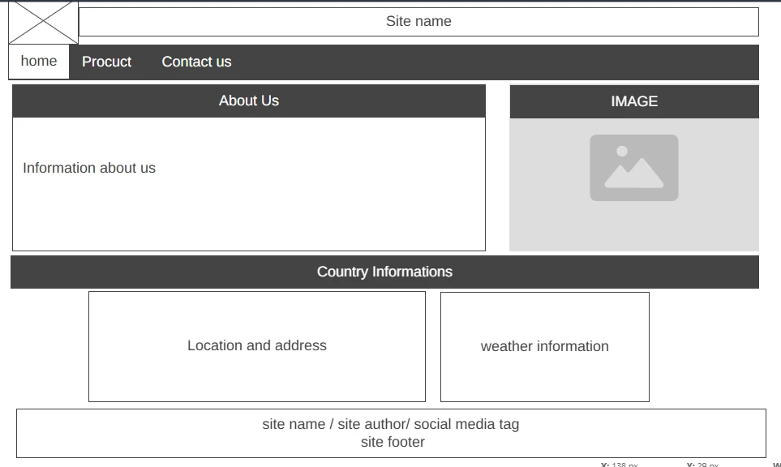
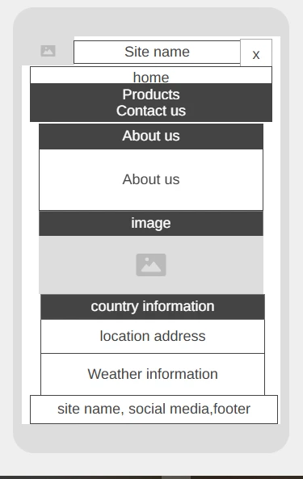

Site name: Extra Market plus
this market name represents a modern shopping experience with a wide variety of products and services.
Site purpose:
The purpose of the Extra Market plus website is to provide a comprehensive online shopping platform that offers a wide range of products such as fruits, vegetables, legumes and services to meet the diverse needs of customers.
Target audience:
The target audience for the Extra Market plus website includes individuals of all ages who are interested in online shopping and are looking for a convenient and reliable platform to purchase products and services. The website aims to cater to a diverse customer base with varying needs and preferences.
Scenarios:
1. What is the best place to purchase groceries and household items online as a busy professional looking for a convenient way to purchase groceries and household items online?
2. where do I find the best and fresh legumes per pound and with the lowest prices?
3. where can I find the best variety of fruits and vegetables, their nutritional information and their uses way?
Color Scheme:
primary colors: Green: #4CAF50 (represents freshness and health) secondary colors: red: #FF5722 (represents energy and excitement) background colors: white: #FFFFFF (represents cleanliness and simplicity) text colors: dark gray: #333333 (represents readability and contrast) other colors: yellow: #FFEB3B (represents optimism and positivity)
Typography:
Wireframe:
larger view

small view
